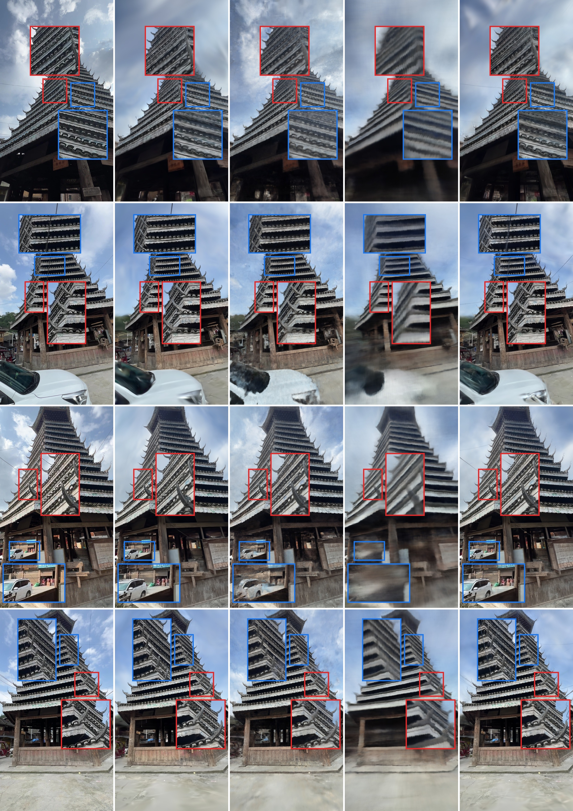
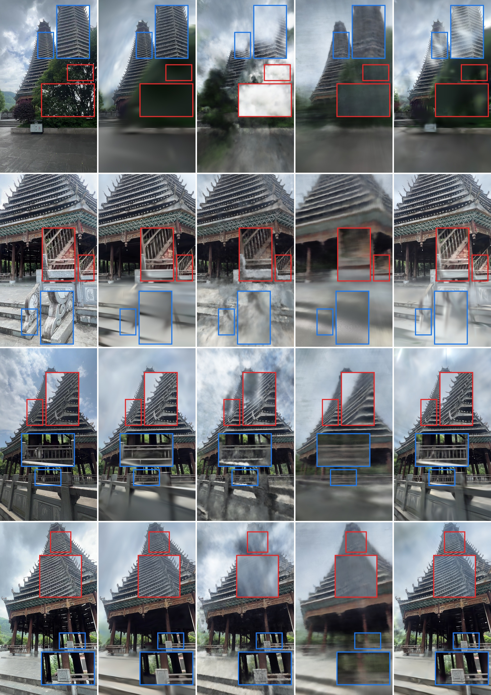
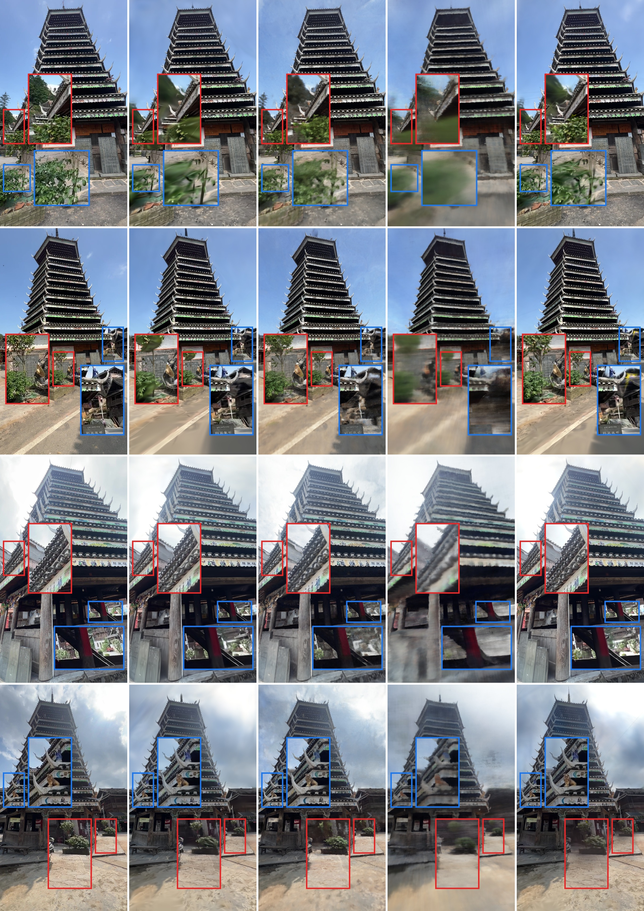
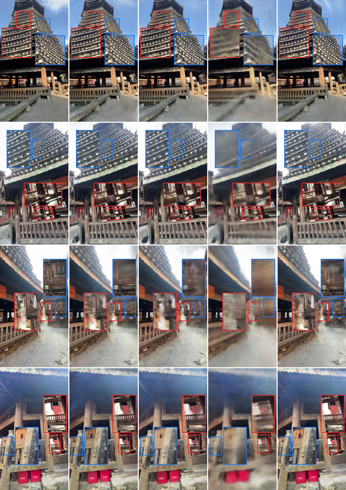

Figure 1: We benchmark four neural reconstruction methods (NeRF, 2DGS, 3DGS, Instant-NGP)
against a conventional SfM-MVS baseline on UAV imagery of four Dong minority drum towers
(朝利 Chaoli, 从江 Congjiang, 则里 Zeli, 增冲 Zengchong),
evaluating novel-view rendering, geometric consistency, and dark-region wooden-structure preservation
for conservation-oriented method selection.
Abstract
Dong drum towers are timber landmarks of the Dong minority in Guizhou, China, whose intricate
wooden frameworks — multi-tier eaves, imitation-dougong brackets, and chuandou frames — pose
severe challenges to 3D digitization: complex geometry, occluded dark regions under the eaves,
and variable outdoor lighting. This study establishes a multi-case benchmark that evaluates
four neural reconstruction methods (NeRF, 2DGS, 3DGS, and Instant-NGP) together with a
conventional SfM-MVS photogrammetric baseline on UAV and ground-level imagery of four drum towers.
Under a unified, fairness-controlled protocol (identical image sets, shared COLMAP poses, common
LLFF-style train/test splits, and a single RTX 4090 workstation), we evaluate
(1) novel-view rendering quality (PSNR / SSIM / LPIPS),
(2) training efficiency and rendering speed,
(3) geometric consistency with the SfM-MVS reference (Accuracy / Recall / F1 / NCD / P95 on
identically cropped tower-body point clouds), and
(4) dark-region preservation of wooden structures via ground-level upward-facing imagery.
3DGS achieves the best rendering fidelity (mean PSNR 31.81 dB, SSIM 0.9646, LPIPS 0.0227),
while INGP offers the fastest training; conventional MVS leaves systematic holes beneath the
eaves that 3DGS reconstructs completely. The results provide actionable, conservation-oriented
method-selection guidelines for heritage practitioners, and all code and data are released
with a permanent Zenodo DOI.
Key Contributions
📈
Multi-Case Heritage Benchmark
A fairness-controlled benchmark of four neural reconstruction methods plus an SfM-MVS
baseline across four real Dong drum tower scenes, covering UAV aerial and ground-level
upward-facing capture.
📏
Beyond PSNR: Geometric & Dark-Region Evaluation
Geometric consistency with the photogrammetric reference (Accuracy / Recall / F1 / NCD / P95
on uniformly cropped tower bodies), plus a dark-region coverage analysis revealing where
conventional MVS fails beneath the eaves.
🏛
Dual-Viewpoint Heritage Dataset
UAV aerial corpus plus ground-level upward-facing imagery of wooden structures
(Congjiang: 423 train / 61 test; Zengchong: 782 train / 112 test), with COLMAP
reconstructions and train/test splits.
💻
Open-Source Release
All benchmark code, per-method training wrappers, evaluation scripts, and the dataset
are publicly available with a permanent Zenodo DOI
(10.5281/zenodo.21429615) for long-term reproducibility.
Benchmark Protocol
Six pipeline stages with strict fairness control: identical image sets per scene, shared SfM
camera poses, common train/test splits (every 8th frame held out), and default/recommended
parameters per method on the same RTX 4090 workstation.
Stage 1–2UAV Acquisition & Corpus Construction
Drone flights around four drum towers (544–654 images per scene) plus ground-level
upward-facing capture for dark wooden structures.
Stage 3Camera Poses (COLMAP)
SfM pose estimation and sparse reconstruction with COLMAP 3.14 (CUDA); 2DGS and 3DGS
share the same COLMAP workspace.
Stage 4Neural Reconstruction
Four methods trained per scene: NeRF (blender, factor 8), 2DGS (30k, sh=3),
3DGS (30k), and Instant-NGP (50k steps, hash encoding).
Stage 5Multi-Dimensional Evaluation
Held-out rendering (PSNR/SSIM/LPIPS), training time, FPS, geometric consistency
(Acc/Recall/F1/NCD/P95 vs. MVS), dark-region coverage analysis.
Stage 6Conservation-Oriented Interpretation
Method-selection guidelines translating quantitative findings into recommendations
for heritage digitization practitioners.
Benchmark Results
Held-out-view rendering performance, averaged over the four drum tower scenes.
The SfM-MVS baseline is rendered by ray-casting its Poisson mesh at the test poses.
Full per-scene results are available in the
benchmark repository.
Best values highlighted.
Method
PSNR ↑
SSIM ↑
LPIPS ↓
Notes
SfM-MVS (baseline)
13.65
0.3548
0.4943
Poisson mesh + per-vertex colour
NeRF
19.30
0.4130
0.5203
Slow convergence, residual haze
2DGS
29.28
0.9452
0.0364
Best geometric consistency (NCD)
3DGS
31.81
0.9646
0.0227
Best rendering fidelity; preserves dark wooden structures
Instant-NGP
27.92
0.9018
0.0828
Fastest training; highest geometric recall
* All methods evaluated on identical held-out test views; LPIPS uses AlexNet.
Means over the four scenes (Chaoli, Congjiang, Zeli, Zengchong).
Ground-Level View Reconstruction
Ground-level (upward-facing) images reconstruct the parts that UAV capture cannot see:
the undersides of multi-tier eaves, imitation-dougong brackets, and chuandou frames.
Each composite compares the four methods against the ground-truth photograph
(two view groups per scene: full view + zoomed crop of wooden details).

Chaoli 朝利
GT / 2DGS / INGP / NeRF / 3DGS

Congjiang 从江
GT / 2DGS / INGP / NeRF / 3DGS

Zeli 则里
GT / 2DGS / INGP / NeRF / 3DGS

Zengchong 增冲
GT / 2DGS / INGP / NeRF / 3DGS
Drum Tower Dataset — Rendering Results
A real-world benchmark featuring Chinese Dong minority drum tower architecture —
challenging geometry with intricate wooden structures, variable outdoor lighting,
and multi-scale details. Below are representative rendering results from our benchmark.
Render View 1
3DGS rendering result
Render View 2
3DGS rendering result
Render View 3
3DGS rendering result
Render View 4
3DGS rendering result
Render View 5
3DGS rendering result
Render View 6
3DGS rendering result
💡 Showing 6 of 63 total rendering images — see the
benchmark repository for full results and videos.
@article{tao2026_dong_drum_tower,
title = {UAV-Based Neural Reconstruction of Dong Drum Towers: A Multi-Case Benchmark for Conservation-Oriented Method Selection},
author = {Tao, Jiaxing},
journal = {IEEE Transactions on Visualization and Computer Graphics},
year = {2026}}